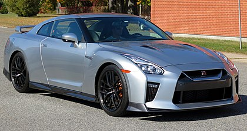

about Nissan GT-R
is a car built by Japanese marque Nissan since 2007. It has a 2+2 seating
layout and is considered both a sports car and a grand tourer. The engine
is front-mid mounted and drives all four wheels. It succeeds the Nissan
Skyline GT-R, a faster variant of the Nissan Skyline. Although this model
was the sixth-generation to bear the GT-R name, it is no longer part of the
Skyline line-up. The car is built on the PM platform, derived from the FM
platform used in the Skyline and Nissan Z models. Production is conducted
in a shared production line at Nissan's Tochigi plant in Japan.

GTR
GTR-wikipedia